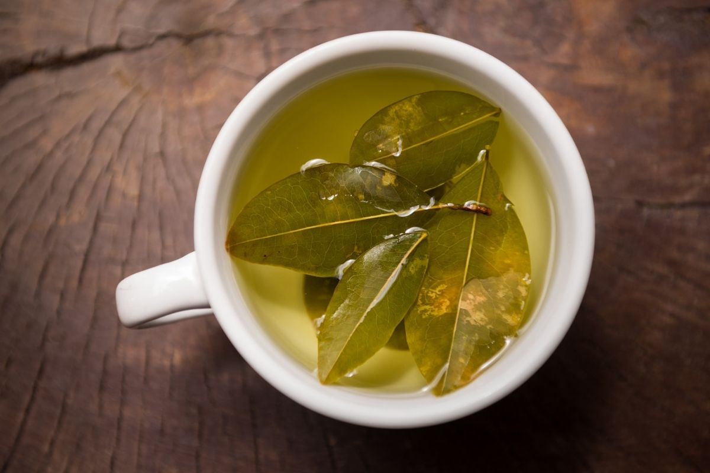
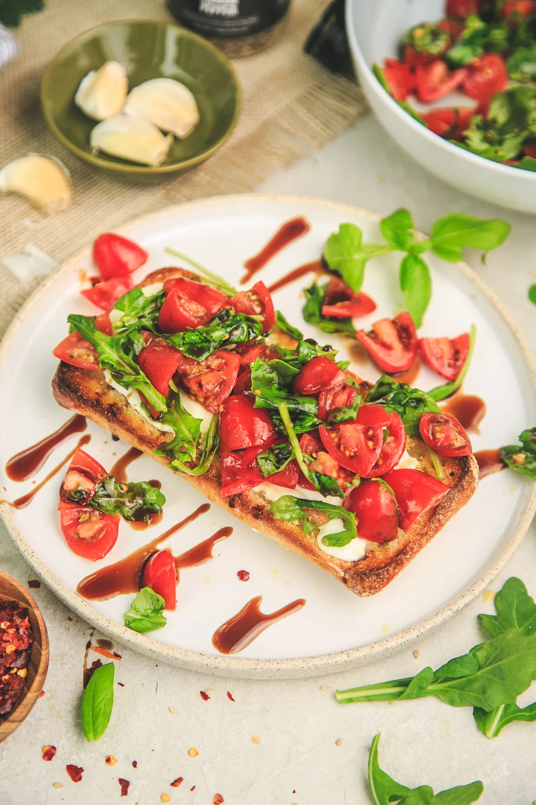

Receitas e Sabores
Produtos Servidos
| Produto | Descrição | Preço |
|---|---|---|
 |
Café: bebida quente de grãos torrados | R$ 8,00 |
|  | Chá: bebida quente de folhas selecionadas | R$ 6,00 |
|  | Toast Caprese: pão ciabata tostado, muçarela de búfala, tomate confit e manjericão | R$ 25,00 |